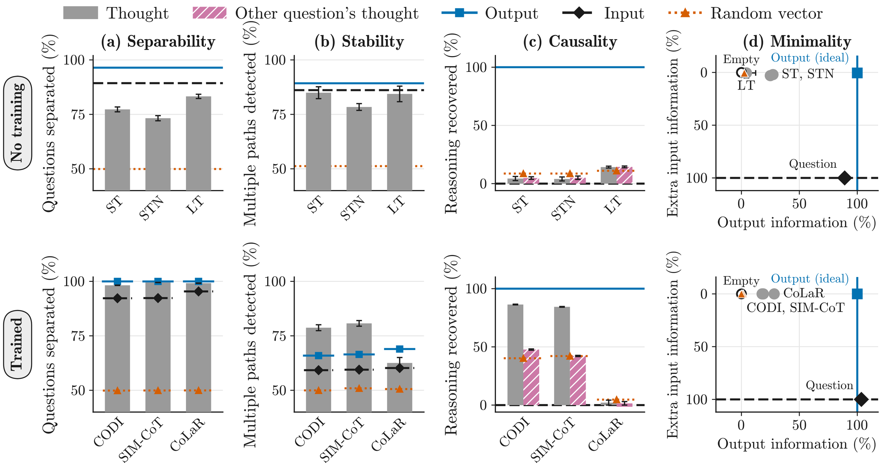
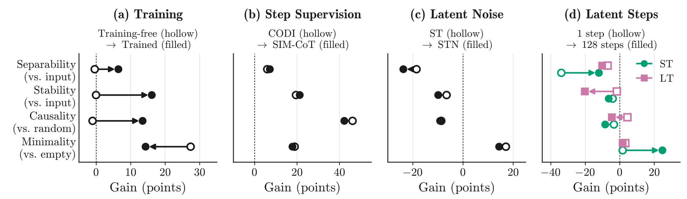
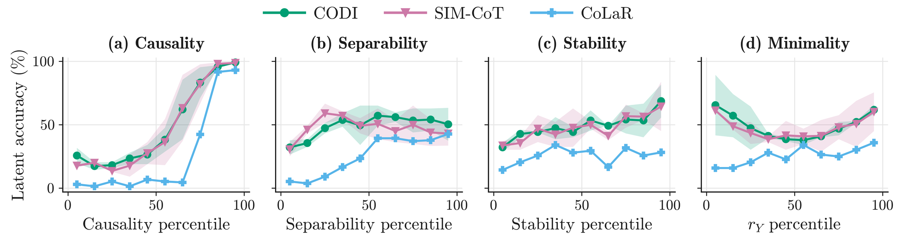

Abstract
Chain-of-Thought (CoT) reasoning improves the performance of Large Language Models (LLMs), yet it writes steps as text and follows one reasoning path at a time, which limits the capabilities of such models. Latent reasoning methods replace these steps with continuous thought representations and claim that a thought representation substitutes for the written reasoning, compresses trajectories, distinguishes semantic content, and achieves superposition of multiple exploration paths at once. These claims concern the content of the thought representation, whereas the evaluations of these methods rely on downstream task accuracy, token counts, and analyses specific to each method. We formalize these claims as a valid thought representation space and prove that a space is valid if and only if its thought representations attain four properties, namely causality, minimality, separability, and stability, each of which follows from one claim. Translating these properties into four measures and auditing three training-free and three trained methods shows gaps in these claims that accuracy may not necessarily reveal. Training-free methods fail all four properties and do not encode the reasoning they are meant to replace, whereas trained methods generally improve substitution. The four properties and measures therefore provide a theoretically grounded evaluation beyond downstream task accuracy and expose failure modes that may guide future development of latent reasoning methods.
Results

Implications for Method Design


BibTeX
@misc{seddik2026makeslatentthoughtvalid,
title = {What Makes a Latent Thought Valid? Defining and Auditing Thought Representations in LLMs},
author = {Fahd Seddik and Fatemeh Fard},
year = {2026},
eprint = {2606.27378},
archivePrefix = {arXiv},
primaryClass = {cs.CL},
url = {https://arxiv.org/abs/2606.27378}
}